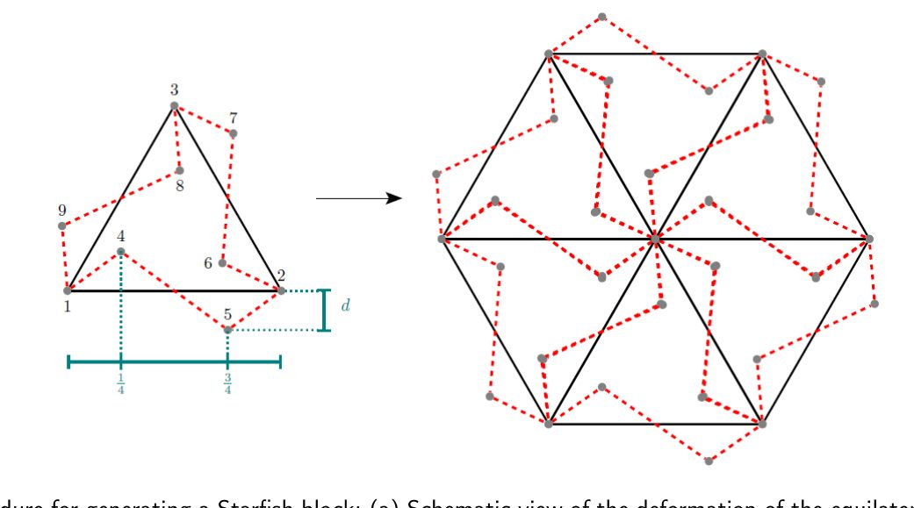
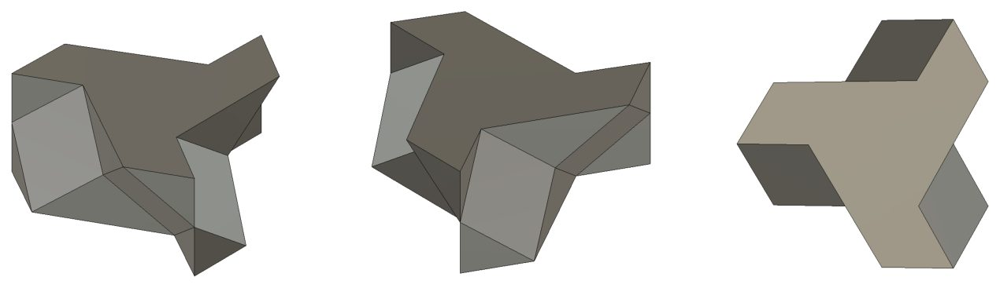
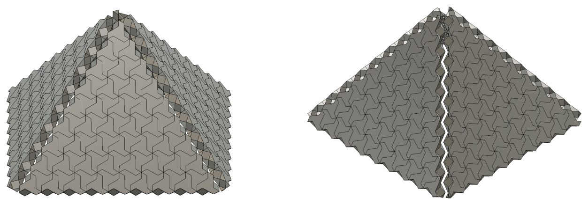
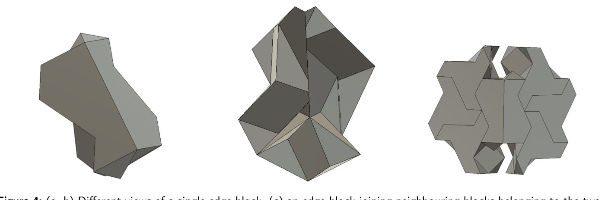
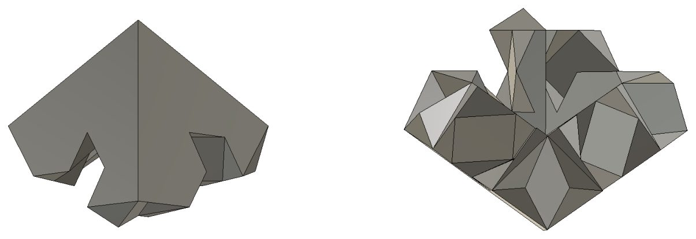
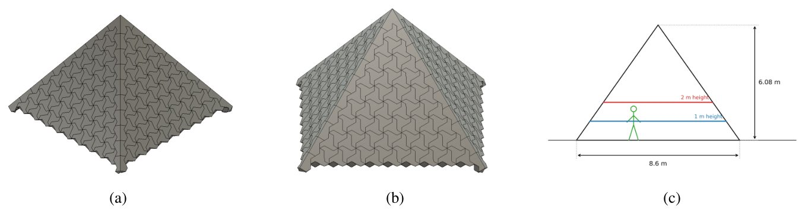
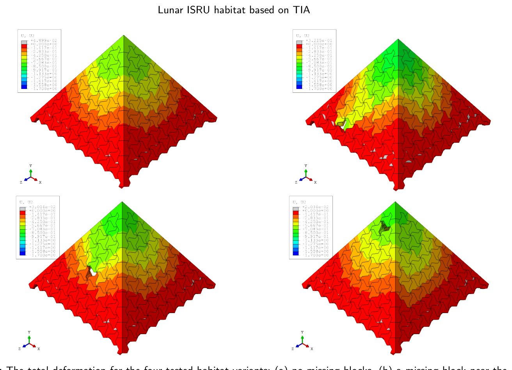
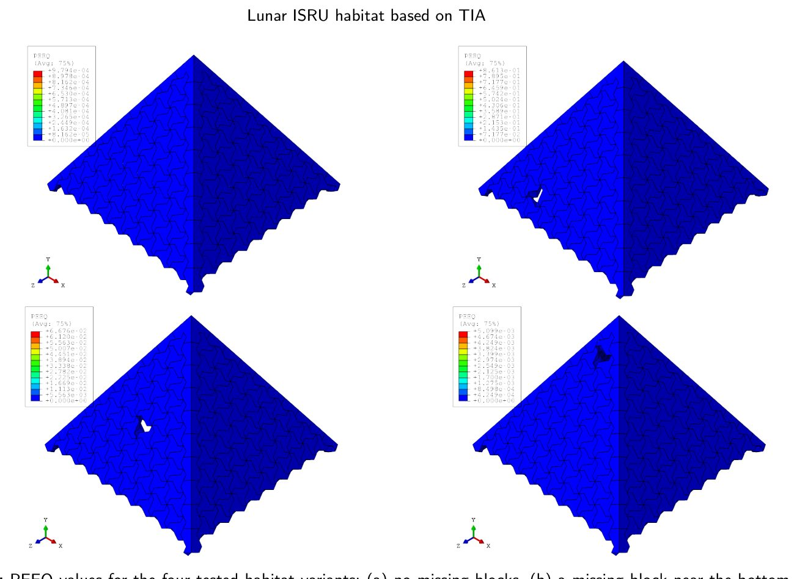
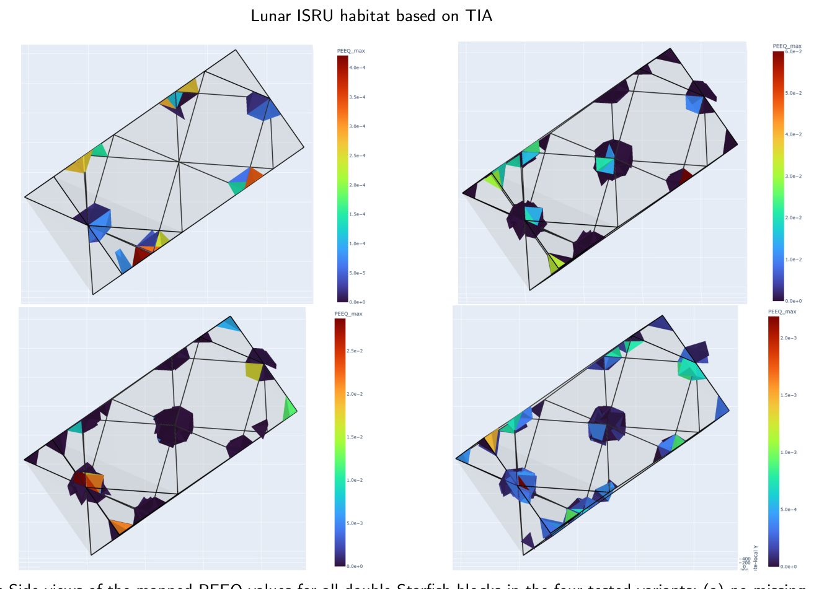

Regolitdan oy bazasi: yelim va boltlar o‘rniga piramidal arxitektura


Oyga qurilish materiallarini tashish qimmatga tushadi, shuning uchun tadqiqotchilar mahalliy resurslarga tayanmoqda. Yangi konsepsiya bir xil bloklardan iborat piramidal gumbazlarni qurishni taklif qiladi, ular faqat o‘z geometriyasi hisobiga bir-biriga bog‘lanadi. Chekli elementlar usuli (FEM) yordamida o‘tkazilgan tahlil konstruksiyaning ayrim bloklar yo‘qolganda ham barqarorligini tasdiqladi.
Asosiysi
- Topologik ilmoqlash yelim va mahkamlagichlarga ehtiyojni yo‘qotadi.
- Drucker-Prager modeli bloklar yo‘qolganda ham barqarorlikni tasdiqladi.
- Piramidal shakl bloklar geometriyasini o‘zgartirmay bazani kengaytirish imkonini beradi.
Batafsil
Kuchlanish-deformatsiya holatini modellashtirish uchun mualliflar Drucker-Prager modelidan foydalanishdi. Bu model ichki ishqalanishga ega materiallar, masalan, pishirilgan oy regolitining xatti-harakatlarini tavsiflaydi. Mizesning klassik plastiklik nazariyasidan farqli o‘laroq, bu model oquvchanlik chegarasining gidrostatik bosimga bog‘liqligini hisobga oladi, bu g‘ovakli keramika uchun juda muhimdir.
Kvadrat asosli piramida geometriyasi (tomon uzunligi 7,5 m) foydalanilmaydigan joyni kamaytirish va masshtablilikni ta’minlash uchun tanlangan. Chekli elementlar tahlilida bloklar topologik ilmoqlangan qattiq jismlar sifatida qaraldi, bunda har qanday elementning qatlamga nisbatan normal yo‘nalishdagi siljishi qo‘shni bloklar tomonidan kinematik cheklangan. Simulyatsiya natijalari shuni ko‘rsatdiki, struktura yuqori ortiqchalikka ega: bir yoki bir nechta blokning yo‘qligi butun qobiqning qulashiga olib kelmaydi.
Cheklovlar
Tadqiqot nazariy xarakterga ega va pishirilgan regolitning mo‘rtligiga siklik harorat yuklamalarining ta’sirini hisobga olmaydi.
Maqolaning batafsil tahlili
Annotatsiya
Ushbu tadqiqotda qurilish bloklarining topologik ilashuvi asosida yangi turdagi oy turar-joy majmuasi konsepsiyasi taklif etiladi. Loyiha bog‘lovchi moddalar yoki mexanik mahkamlagichlarsiz bir-biriga birikadigan bloklar geometriyasini birlashtirib, piramidasimon barqaror tuzilmani hosil qiladi. Ushbu yondashuv mahalliy resurslardan foydalanish (ISRU) asosida yerdan tashqarida qurilish olib borish uchun juda mos keladi. Druker-Prager plastiklik modelidan foydalangan holda o‘tkazilgan chekli elementlar tahlili shuni ko‘rsatdiki, oy regolitidan tayyorlangan bunday inshootlar yuqori chidamlilikka ega: ular lokal shikastlanishlar yoki ayrim bloklarning yetishmovchiligida ham o‘z yaxlitligini saqlab qoladi.
Muhim
Topologik ilashuv konsepsiyasi qo‘shimcha mahkamlagichlarsiz regolitdan barqaror oy bazalarini qurish imkonini beradi va konstruksiyaning nosozliklarga chidamliligini ta’minlaydi.
Oyga inson qadam qo‘yishi va Artemis, Moon Village hamda Xalqaro oy tadqiqot stansiyasi kabi dasturlarning rivojlanishi bilan qurilish masalalari dolzarb ahamiyat kasb etdi. Yerdan material tashishning yuqori narxi oy regolitidan foydalanishni yagona maqbul yechimga aylantiradi. Sinterlangan (pishirilgan) regolit mexanik xususiyatlariga ko‘ra g‘ovakli keramikaga yaqin bo‘lib, uni qayta ishlash uchun quyosh energiyasidan foydalanish mumkin.
Izoh
ISRU (In Situ Resource Utilization) — bu kosmik missiyalarning logistik xarajatlarini kamaytirish uchun osmon jismlaridagi mahalliy resurslardan foydalanish strategiyasidir.
Modulli qurilish usuli avtomatlashtirilgan yig‘ish, bazani kengaytirish va materiallarni qayta ishlash uchun eng samarali hisoblanadi. Shuningdek, modullik sinterlangan regolitning mo‘rtligini yumshatishga yordam beradi. Mualliflar tizim samaradorligini oshirish uchun bloklar turlarini minimallashtirish va ularning o‘lchamlarini montaj qilish uchun qulay qilib optimallashtirish zarurligini ta’kidlaydilar.
Yer sharoitida modulli qurilishda yopishtiruvchi moddalar, qorishmalar yoki ulagichlardan foydalaniladi. Oydagi juda past atmosfera bosimi yopishtiruvchi moddalarning qotishiga to‘sqinlik qiladi, suvning tanqisligi esa qorishma tayyorlashni imkonsiz qiladi. Bundan tashqari, yopishtirilgan birikmalar ishonchsizdir, chunki ularni buzmasdan tekshirib bo‘lmaydi, mexanik ulagichlar esa kuchlanish kontsentratsiyasini keltirib chiqarib, konstruksiya yaxlitligini buzadi.
Muqobil yechim sifatida topologik ilmoqli (topological interlocking) konstruksiyalar taklif etiladi, bunda bloklar bog‘lovchilarsiz, faqat o‘z geometriyasi va o‘zaro joylashuvi hisobiga ushlanib turadi. Ko‘pgina yechimlar tekis tuzilmalarga qaratilgan bo‘lsa-da, Oy bazalari uchun uch o‘lchamli shakllar zarur. Gumbazsimon qobiqlarni qo‘llashda Gaussning Theorema egregium nazariyasiga ko‘ra, tekis to‘rni sferik yuzaga o‘tkazish bloklarning shaklini buzilishiga olib keladi va har xil turdagi bloklarni talab qiladi.
Muhim
Oy moduli uchun piramidal geometriya taklif etildi, u bir xil o‘lchamdagi bloklardan iborat bo‘lib, bog‘lovchilarsiz o‘zaro mahkamlanadi va geometrik buzilishlar muammosini hal qiladi.
Mualliflar piramidal shaklni taklif qilishadi, uning qirralari teng tomonli uchburchaklardan iborat bo‘lib, bir xil bloklarning monolayi bilan qoplanadi. Bu shakl ichki bosim va gravitatsiya kuchlarini samarali taqsimlaydi. Bunday tizimda har qanday blokning qatlamga nisbatan normal yo‘nalishdagi siljishi qo‘shni bloklar tomonidan kinematik cheklanadi. Konstruksiyaning mexanik barqarorligi chekli elementlar usuli (FE) yordamida, bloklarning shikastlanishini hisobga olgan holda tasdiqlangan.
Izoh
Topologik ilmoqli tizim — bu detallarning geometrik shakli orqali bir-birini blokirovka qilishi natijasida yelim yoki boltlar ishlatmasdan barqarorlikni ta'minlaydigan yig‘ish usuli.
Asosiy maqsad — astronavtlar yashashi va ishlashi uchun boshqariladigan muhitni ta’minlaydigan, bosim ostidagi to‘liq yopiq hajmni yaratishdir. Ichki bosimdan foydalanish qo‘shimcha himoyasiz standart jihozlarni qo‘llash imkonini beradi, bu esa Oyga tashilishi kerak bo‘lgan materiallar massasini kamaytiradi. Habitat dizayni ikki asosiy yuklama: ichki bosim (sirtlarga perpendikulyar) va tortishish kuchi (pastga yo‘naltirilgan) o‘rtasidagi o‘zaro ta’sirga asoslanadi. An’anaviy vertikal devorli konstruksiyalarda ichki bosim tortishish kuchi bilan kompensatsiya qilinmaydigan yuklamani hosil qiladi.
Muhim
Qobiq konstruksiyalaridan foydalanish yuklamalarni egilish momentlarisiz, faqat membrana kuchlanishlari orqali qabul qilish imkonini beradi, bu esa muhrlangan modullar uchun juda samaralidir.
Izoh
Membrana kuchlanishlari — bu qobiq tekisligida ta’sir qiluvchi ichki kuchlar bo‘lib, ular konstruksiyaning egilishsiz ishlashini ta’minlaydi.
Sferani qoplash uchun Platon jismlaridan foydalanish bloklar sonini qat’iy belgilab qo‘yadi, bu esa modulni kengaytirish imkonini bermaydi. Goldberg ko‘pyoqlari asosidagi geodezik gumbazlar ham masshtablanishda cheklovlarga ega. Kengaytirilishi mumkin bo‘lgan tizimni yaratish uchun mualliflar ikosaedr asosidagi geometriyani tanladilar. Asos sifatida tomoni taxminan 7,5 m bo‘lgan kvadrat asosli piramida tanlandi, chunki u uchburchak piramidaning ortiqcha balandligi va beshburchak piramidaning foydasiz maydonlari o‘rtasidagi muvozanatni ta’minlaydi.
Ehtiyot bo'ling
Tanlangan piramida geometriyasi germetiklikni ta’minlash uchun ichki gaz o‘tkazmaydigan membranani talab qiladi.
Ushbu yondashuvning asosiy afzalligi — masshtablanish: bir xil bloklarni qo‘shish yoki ayirish orqali turli o‘lchamdagi piramidalarni yig‘ish mumkin. Shuningdek, topologik bog‘lanish tizimning ortiqchaligini (redundancy) ta’minlaydi: bitta blok shikastlanganda (masalan, mikrometeorit ta’sirida) konstruksiyaning umumiy yaxlitligi saqlanib qoladi.
Blok geometriyasi piramida qirralarini yig‘ish uchun ishlab chiqilgan bo‘lib, tashish qulayligi uchun maksimal o‘lcham 1 m etib belgilangan. Konstruksiya topologik ilashish prinsipiga asoslanadi, bu esa elementlarni ishlab chiqarish uskunalari yoki robotlar imkoniyatlariga moslashtirish imkonini beradi. Asosiy birlik sifatida p6 kristallografik guruhining fundamental sohasi bo‘lgan teng tomonli F uchburchagi olingan. Bu guruh uchburchakni uchlari atrofida 120° ga burish orqali tekislikni bo‘shliqlarsiz to‘ldirish imkonini beradi.
Izoh
Fundamental soha — bu tekislikni hech qanday bo‘shliqlarsiz to‘liq qoplaydigan minimal geometrik element.
Murakkab ilashish geometriyasini hosil qilish uchun uchburchak tomonlari to‘rtta teng segmentga bo‘linadi. Ikki tashqi bo‘linish nuqtasi qirraga perpendikulyar ravishda 120 mm ga suriladi: biri ichkariga, ikkinchisi tashqariga. p6 simmetriyasini saqlash va ustma-ust tushishlarning oldini olish uchun modifikatsiya uchburchakning barcha uch tomoniga qo‘llaniladi (1-rasm). Blok har biri 200 mm masofada joylashgan uchta parallel tekislik o‘rtasida interpolyatsiya qilish orqali hosil qilinadi. Uchta qatlamdan foydalanish va cho‘qqilarni surish yo‘nalishlarini almashtirish orqali umumiy qalinligi 400 mm bo‘lgan «ikki karrali dengiz yulduzi» (double-Starfish block) bloki yasaladi (2-rasm). Konstruksiya bo‘shliqlarsiz zich joylashishni ta’minlaydi, uning ijobiy qattiqligi oldingi tadqiqotlarda 120 mm deformatsiya konfiguratsiyalari uchun tasdiqlangan.
Muhim
p6 guruhi bo‘yicha tomonlarni modifikatsiya qilish va uch qatlamli tuzilmani qo‘llash 400 mm qalinlikdagi ijobiy qattiqlikka ega o‘z-o‘zidan ilashuvchi blokni yaratishga imkon beradi.
Bloklardan yig‘ilgan to‘rtta teng tomonli uchburchak qirra muntazam oktaedrning yuqori qismini tashkil etuvchi piramidani hosil qiladi. Ushbu namunada qirraning asosi 9 ta blokdan iborat bo‘lib, bu har bir qirrada jami 81 ta blok borligini anglatadi. Qirralar tashqi tekisliklarga nisbatan normallar bo‘ylab surilgan holda birlashtiriladi, bu qo‘shni qirralar o‘rtasida kontakt bo‘lmasligini ta’minlaydi va ikkita ichma-ich joylashgan piramidani hosil qiladi (3-rasm).
Topologik ilashish periferik elementlarning (pastki qator, qirralar, cho‘qqi) mahkamlangan bo‘lishini talab qiladi. Pastki qator gruntga mahkamlanishi mumkin bo‘lsa-da, qirralar va cho‘qqi erkin qoladi. Konstruksiyaning strukturaviy yaxlitligini tekshirish uchun Oy sharoitlariga mos parametrlar bilan chekli elementlar (FE) simulyatsiyalari o‘tkazildi.
Ehtiyot bo'ling
Model qattiq mahkamlanmagan periferik bloklarning ilashish geometriyasi hisobiga konstruksiya barqarorligini saqlab qolishini nazarda tutadi.
Chekli elementlar tahlili uchun Abaqus 2024 Explicit dasturi va Druker-Prager plastiklik modeli qo‘llanildi. Masala statik bo‘lishiga qaramay, bloklararo ko‘plab kontaktlar mavjudligi sababli hisoblash barqarorligini ta’minlash uchun Explicit usuli tanlandi. Model 2 soniya davomida ishladi, yuklamalar «smooth step» funksiyasi orqali bosqichma-bosqich qo‘yildi. Tizim muvozanati ichki energiyaning kinetik energiyadan sezilarli darajada yuqoriligi bilan tasdiqlandi. 361 ta blokdan iborat yig‘ma Fusion 360 dasturida loyihalashtirildi. Bloklararo o‘zaro ta’sir «hard contact» va nol ishqalanish koeffitsienti bilan ifodalandi, bu topologik bog‘langan tizimlar uchun maqbuldir.
Izoh
Explicit usuli — bu murakkab kontaktli masalalarda hisoblash barqarorligini ta’minlash uchun vaqt bo‘yicha bosqichma-bosqich hisoblash algoritmi.
Simulyatsiyada Oy gravitatsiyasi (1,62 m/s²) va atmosfera bosimining yo‘qligi hisobga olindi. Modul ichidagi bosim 81 060 Pa (taxminan 0,8 atm) deb belgilandi, bu samolyot salonidagi sharoitlarga mos keladi. Radiatsiyadan himoya qilish va konstruksiyani barqarorlashtirish uchun tashqi yuzaga 0,15 N/mm² bosim hosil qiluvchi regolit qatlami qo‘shildi.
Muhim
Asosiy parametrlar: gravitatsiya 1,62 m/s², ichki bosim 81 060 Pa va tashqi regolit yuki 0,15 N/mm².
Sinterlangan regolit bloklari uchun 15 GPa Yung moduli, 0,17 Puasson koeffitsienti va 1,5 g/sm³ zichlik qabul qilindi. Mo‘rt sinishni modellashtirish uchun Druker-Prager modeli (ishqalanish burchagi 58,5^°, dilatansiya burchagi 0^°, cho‘zilishdagi oquvchanlik chegarasi 5 MPa) qo‘llanildi. Muvaffaqiyatsizlik mezonlari: umumiy strukturaviy yaxlitlikning yo‘qolishi va alohida bloklarning mahalliy sinishi. Python skripti yordamida bloklarning qolgan qismi o‘zaro bog‘lanish qobiliyatini saqlab qolishi tekshiriladi.
Ehtiyot bo'ling
Model materialning mo‘rt sinishiga asoslangan; bloklarning mahalliy qismlari sinishi, agar umumiy geometriya yuk ko‘tarish qobiliyatini saqlasa, qabul qilinadi.
Muhokama
Natijalarni muhokama qilish
Ushbu ishda uch xil turdagi bloklardan iborat topologik bog'langan (TIA) yig'ilma asosida modulli geometriya ishlab chiqildi. Bu tuzilma hajmni kengaytirish va foydalanishga yaroqli ichki makon yaratish imkonini beradi. Biz konstruksiyaning Oy muhiti sharoitidagi xatti-harakatini, ham to'liq yig'ilgan holda, ham bitta blok olib tashlangan konfiguratsiyalarda baholadik. Tadqiqot shuni ko'rsatdiki, topologik ilmoqli tizim asosida Oy turar joyini yaratish texnik jihatdan maqsadga muvofiqdir va konstruksiya hatto ayrim elementlar yo'qolganda ham o'z yaxlitligini saqlab qoladi. Bu TIA ning asosiy afzalligi — lokal shikastlanishlarga nisbatan yuqori chidamliligini tasdiqlaydi.
Muhim
Topologik bog'langan tuzilmalar yuqori yashovchanlikka ega bo'lib, ayrim modullar yo'qolganda ham yuk ko'tarish qobiliyatini saqlab qoladi.
Taklif etilgan qurilish usuli mahalliy resurslardan foydalanish (ISRU) hisobiga konstruksiya massasini optimallashtirish imkonini beradi. Yer yuzidan barcha materiallarni tashishni talab qiladigan an'anaviy yondashuvlardan farqli o'laroq, bizning usulimiz asosiy material sifatida Oy regolitidan foydalanishga imkon beradi. Biroq, ish bir qator taxminlarga asoslanadi, birinchi navbatda, sinterlangan regolitning xususiyatlari, ular yerdagi analoglardan farq qilishi mumkin. Bundan tashqari, joriy model shlyuzlar va kirish-chiqish tizimlarini hisobga olmaydi, ular katta ehtimol bilan Yerdan keltirilishi kerak bo'ladi.
Izoh
ISRU (In-Situ Resource Utilization) — qurilish materiallarini bevosita joyida ishlab chiqarish uchun mahalliy resurslardan (masalan, Oy tuprog'idan) foydalanish konsepsiyasi.
Konstruksiyaning germetikligini ta'minlash uchun qo'shimcha membrana ishlatish zarur, chunki TIA bloklari orasidagi bo'shliqlar, ayniqsa yuk ostida, gaz o'tkazmasligini ta'minlamaydi. Bunday tizimlarning germetikligi masalalari hali yetarlicha o'rganilmagan va kelgusi tadqiqotlarni talab qiladi. Shuningdek, joriy geometriya bazaviy hisoblanadi; blok parametrlarini Oy muhitining aniq talablariga moslashtirish xususiyatlarni sezilarli darajada yaxshilashi mumkin. Umuman olganda, raqamli modellashtirish TIA-tuzilmalari ichki bosim yuklarini samarali taqsimlashini va sinterlangan regolit kabi mo'rt materiallardan foydalanishga imkon berishini tasdiqladi.
















Tadqiqot sxemasi
Preprint hali taqriz qilinmagan. Xulosalar dastlabki.
Manba
| Manba | Kategoriya | Preprint litsenziyasi |
|---|---|---|
| arXiv | fem_methods | arxiv |
Manbalar
| Manba | Havola |
|---|---|
| Страница препринта | arxiv.org |
| Полный текст (PDF) | arxiv.org |
| DOI | doi.org |
| Метаданные Crossref | api.crossref.org |
| Europe PMC | europepmc.org |